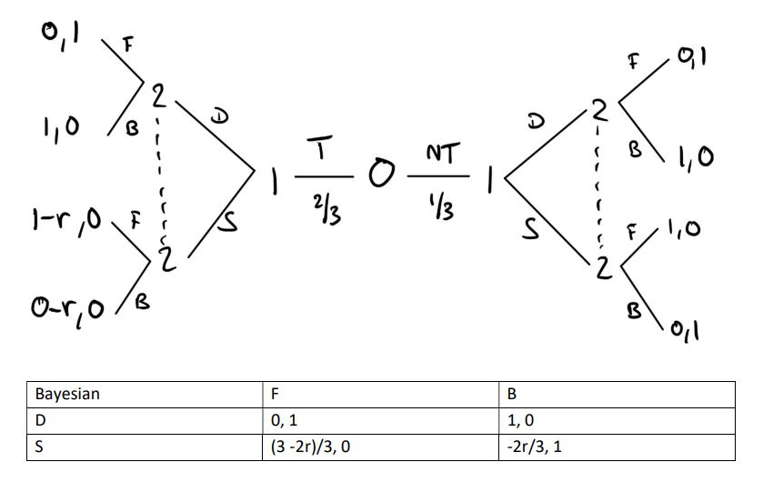

For Game Theory class, I made an analysis paper on badminton. The question was whether both players in badminton
should vary their shot when they are tired. The conclusion I came to was that they both should split evenly between playing offensively and defensively. I also came to believe that
training their stamina would be the best course of action.